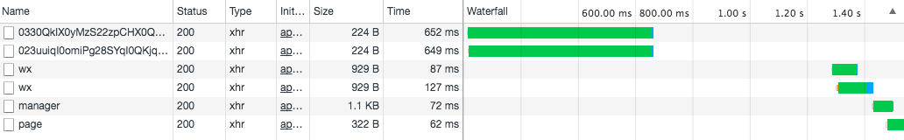

在之前的文章小程序 Page 获取登录态，异步满天飞？中，曾经讨论了一番微信小程序中登录态的获取维护与具体页面的业务数据接口调用之间的关系，由于无法保证登录逻辑与业务接口的时序性（而业务接口又必须依赖登录逻辑的完成才能获取 Token 进行验证），因此当时使用了类似 EventBus 的方法来串行化，使业务接口必须等待全局登录逻辑完成。
这样的方案不仅侵入性高，而且当业务页面变得越来越多时，EventBus 事件与回调的维护将变得一团糟。因此经过与 Gayhub 大神的探讨后，整理出这样的一套方案。
背景：登录态与第三方 Session 的获取维护
对于微信小程序的应用来说，有两个需要维护的状态，一个是微信的登录态，另一个第三方 Session 的状态，先看微信官方的登录态时序图：
微信官方登录态时序图
结合 API 文档可以知道，通过 wx.login 和 wx.checkSession 两个前端接口来进行刷新和维护；而第三方 Session 的获取就是整个登录态中的某一步：在调用第三方开发者服务器用 code 换取 openid 的接口中返回我们自己定义的登录态（即第三方 Session）。
换言之，如果是第三方 Session 过期了，我们可以完全可以直接重新走一遍这个登录态流程来同时刷新微信登录态和第三方的登录态，而不需要独立进行第三方的刷新。
产生了问题：业务接口与登录逻辑的时序
按照登录态时序图来实现整个登录逻辑本来是没有问题的，一般来说我们会在一开始进入小程序时就进行登录态的获取，换言之，就是在 App 的 onLaunch 事件中执行这个登录逻辑。但注意到登录时序中有一步：
wx.request 发起业务请求，携带自定义登录态
一般来说，这些业务请求是放在了各个 Page 里面进行的，换言之，这个数据的获取是在 Page 的 onLoad 等事件里执行的。这样就会产生一个先后顺序的问题，详细介绍请看上一篇文章《小程序 Page 获取登录态，异步满天飞？》。
总之， 这种采用登录逻辑与业务逻辑分离的做法会带来很多不必要的代码冗余（包括处理 EventBus 事件的代码），能不能有一种方法可以优雅地解决这个问题呢？使 Page 只需要关注业务逻辑，到后端拿数据只是一段简单的函数调用而不必关注登录态？
通过中间层屏蔽登录逻辑
统一的后端中间层
当我把这个问题发到 Github 上后，有同学提出了这样一种解决方案：对所有的 request 路由到一个中间层，通过中间层来处理登录逻辑。
Amazing~当我们重新审视这个问题的出现原因时，我们发现正是由于我们把整个登录态逻辑放在两个时序不相关的地方：App.onLaunch 和 Page.onLoad。那么为什么一定要进入小程序时就需要执行登录态获取的逻辑呢？只需要确保在执行请求的时候成功获取登录态与第三方 Session 就可以了。这样一来就可以严格地控制登录态与业务请求的先后顺序，不会出现业务请求时，token 为空的情况了。
根据这个思路，每一个 request 都会执行这样的一个流程图：
总体流程图
对于每一个请求，都去判断一下登录态的情况，如果发现没有登录，则执行相应的登录逻辑，登录逻辑的细节是这样的：
登录逻辑流程图
整个逻辑其实就是 A/B/C 三个函数调用，C 的流程是根据微信官方时序实现的，并且加入了获取个人信息部分，因为大部分的第三方登录接口都需要保存诸如微信头像地址等个人信息。
代码实现
小程序 API Promise 化
由于小程序提供的 API 全是回调函数的方式，在实现上文提到的 C 流程时会导致典型的回调地狱，因此首先需要一个把小程序 API 都返回 Promise 的 Wrapper.
const promisify = wxMethod => options => new Promise((resolve, reject) => {
const extendOptions = Object.assign({
success(res) {
resolve(res);
},
fail(res) {
reject(res);
}
}, options);
wxMethod(extendOptions);
});
class WeixinWrapper {
login = promisify(wx.login);
request = promisify(wx.request);
getSetting = promisify(wx.getSetting);
getUserInfo = promisify(wx.getUserInfo);
checkSession = promisify(wx.checkSession);
}
const weixinWrapper = new WeixinWrapper();
export default weixinWrapper;
|
这样就可以使用 Promise 来处理了，方便很多。
request 实现
对于后端请求的统一入口 request，按照流程图进行实现，这里登录逻辑里的三个方法 A/B/C 返回的都是 Promise
- A - 检查微信登录态：
checkWxSession
- B - 检查第三方 Session 态：
checkThirdSession
- C - 登录逻辑：
doLogin
检查都通过后，将 store 中的 token 放到每个 request 的 Header 中即可实现业务请求带上自定义登录态的需求了。
const request = (method, url, data, header = {}) => new Promise(async (resolve, reject) => {
try {
const thirdSessionChecked = await checkThirdSession();
const wxSessionChecked = await checkWxSession();
if (!(wxSessionChecked && thirdSessionChecked)) {
await doLogin();
}
const customHeader = header;
if (store.state.token) {
customHeader.Authorization = `Bearer ${store.state.token}`;
}
const res = await wxWrapper.request({
method,
url: url.startsWith('http') ? url : apiPrefix + url,
data,
header: customHeader
});
if (res.statusCode >= 200 && res.statusCode < 300) {
resolve(res.data);
} else {
reject(res);
}
} catch (err) {
reject(err);
}
});
|
三个方法
登录逻辑中三个方法的实现就直接根据逻辑来实现就好了，注意都返回 Promise 就行了，这里就不贴出全部代码了，大致看下 doLogin 的结构。
const doLogin = (globalUserInfo = {}) => new Promise((resolve, reject) => {
let customOpenId;
let headImg;
let fullUserInfo;
wxWrapper.login()
.then(({ code }) => wxWrapper.request({
url: `${wxApiPrefix}/v1/openId/${code}`,
method: 'GET',
data: {
type: 'xcx'
}
}))
.then(({ data: { code: openCode, data: openid }, statusCode: openidCode }) => {
customOpenId = openid;
if (openidCode === 200 && openCode === 1) {
return wxWrapper.getSetting();
}
throw new Error();
})
.then(({ authSetting }) => {
if (authSetting['scope.userInfo']) {
return wxWrapper.getUserInfo({
withCredentials: true,
});
}
throw new Error();
})
.then((userInfo) => {
fullUserInfo = userInfo;
headImg = fullUserInfo.userInfo.avatarUrl;
headImg = `${headImg.substr(0, headImg.lastIndexOf('/'))}/46`;
return wxWrapper.request({
url: `${apiPrefix}/auth/wx`,
method: 'POST',
data: {
clientType: 'xcx',
headImg,
nickname: fullUserInfo.userInfo.nickName,
sex: fullUserInfo.userInfo.gender,
xcxOpenid: `${customOpenId}`,
realname: globalUserInfo.realname
},
});
})
.then(({
data: { code: authCode, data: token },
statusCode: tokenCode
}) => {
if (tokenCode === 200 && authCode === 1) {
const now = Date.now();
const user = {
openid: customOpenId,
nickname: fullUserInfo.userInfo.nickName,
headImg,
realname: globalUserInfo.realname
};
store.commit('setToken', token);
store.commit('setTokenGenTime', now);
store.commit('setUser', user);
wx.setStorageSync('token', token);
wx.setStorageSync('token_gen_time', now);
wx.setStorageSync('user', user);
resolve();
}
throw new Error();
})
.catch(() => {
reject();
});
});
|
新的问题：并发业务接口导致多次进入登录逻辑
通过一个统一的 request 方法，把所有到后端业务的接口路由在一起并处理登录态很好的解决了之前提到的执行时序的问题。但会导致两个新的问题：
当页面中并发两个 request 时，由于登录逻辑是异步的，就会有可能出现两个 request 都进入了登录逻辑。不仅浪费了网络资源，而且还有可能导致个人敏感信息的解密出错。

执行过登录逻辑后的状态没有保存起来，上文的 request 实现是无状态的，那意味着以后每次调用 request 都会调用 wx.checkSession 进行微信登录态的检查，而这不是我们希望看到的，检查过以后在当前小程序的生命周期里就不应该再去检查了。
因此我们需要一个类似锁的东西，让代码在登录逻辑中只执行一次，如果执行过了立即返回，没执行过就马上执行，执行中则等待。
Promise.race
没错！只需要用 Promise.race - MDN 就能快速地解决掉上面的问题！
什么是 Promise.race 直白地解释下，就是传入一个 Promise 数组，返回一个新的 Promise，当且仅当数组中有一个 Promise resolve 了，新的 Promise 才会 resolve.
var p1 = new Promise(function(resolve, reject) {
setTimeout(resolve, 500, "one");
});
var p2 = new Promise(function(resolve, reject) {
setTimeout(resolve, 100, "two");
});
Promise.race([p1, p2]).then(function(value) {
console.log(value);
});
var p3 = new Promise(function(resolve, reject) {
setTimeout(resolve, 100, "three");
});
var p4 = new Promise(function(resolve, reject) {
setTimeout(reject, 500, "four");
});
Promise.race([p3, p4]).then(function(value) {
console.log(value);
}, function(reason) {
});
var p5 = new Promise(function(resolve, reject) {
setTimeout(resolve, 500, "five");
});
var p6 = new Promise(function(resolve, reject) {
setTimeout(reject, 100, "six");
});
Promise.race([p5, p6]).then(function(value) {
}, function(reason) {
console.log(reason);
});
|
改造登录逻辑
由于第三方 Session 状态检查相对较轻，也可以允许并发重入，因此就不需要改造。而调用 wx.checkSession 检查小程序登录态则可以使用 Promise.race 改造一下。
const checkWxSession = () => {
if (checkWxSessionPromise) {
return Promise.race([checkWxSessionPromise]);
}
checkWxSessionPromise = new Promise((resolve) => {
wxWrapper.checkSession().then(() => {
resolve(true);
}).catch(() => {
resolve(false);
});
});
return checkWxSessionPromise;
};
|
同理，实际的登录逻辑 doLogin 也可以通过这样「缓存」起 Promise 来实现只执行一次，但需要注意的是，由于当 Promise 生成后就不再进入实际的登录逻辑了，当登录成功或失败时，需要重置缓存的 Promise 对象。另外检查微信登录态的缓存也需要更新。
const doLogin = (globalUserInfo = {}) => {
if (loginPromise) {
return Promise.race([loginPromise]);
}
loginPromise = new Promise((resolve, reject) => {
wxWrapper.login().then(() => {
loginPromise = null;
checkWxSessionPromise = Promise.resolve(true);
resolve();
}).catch(() => {
loginPromise = null;
reject();
})
});
return loginPromise;
}
|
总结
微信小程序的开发中需要处理微信本身的登录态与第三方的登录态，因此整个状态的保持与维护逻辑都相对较为复杂，这里还没有涉及到只刷新第三方登录态的情况（微信登录态未过期第三方登录态过期），而是统一为无论谁过期了统一两个状态一起刷新。这样的处理在效率和复杂度来说应该是可以接受的。
另外如果小程序中不需要接入微信，比如是一个需要账号密码登录的应用，那就可以完全不使用 wx.login 这种接口来维护微信的登录态了，自己维护即可。
参考资料